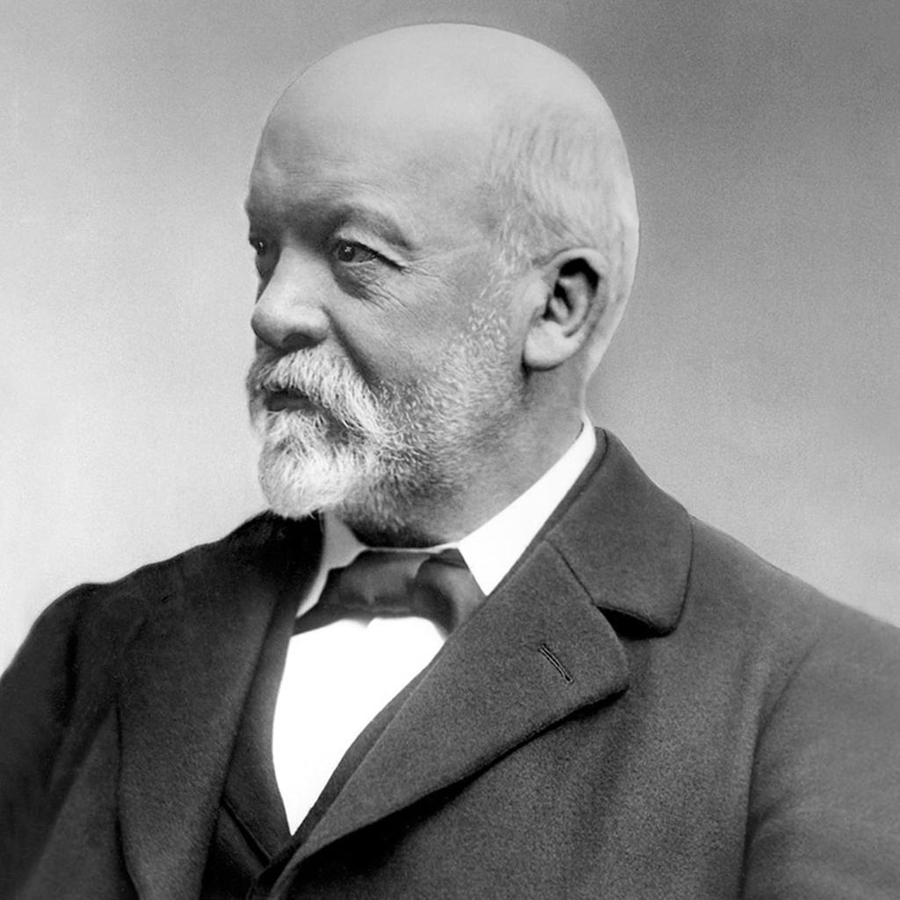
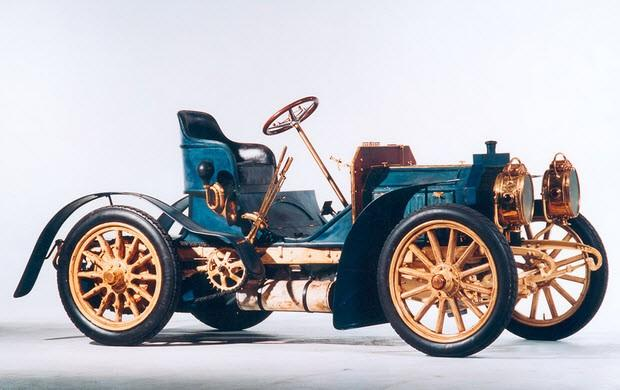
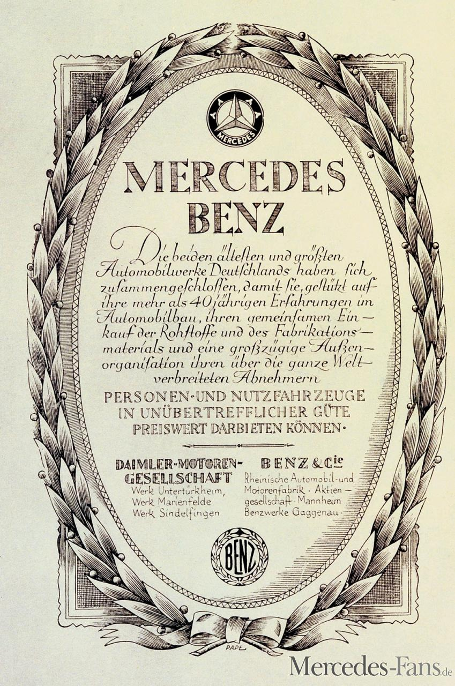
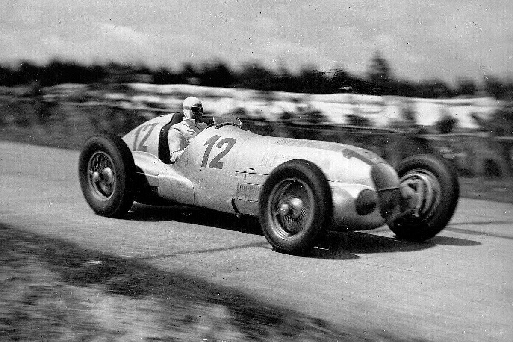
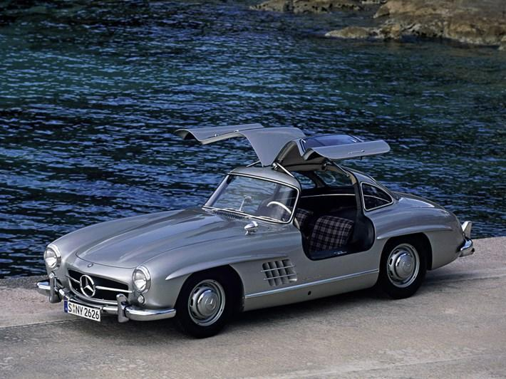
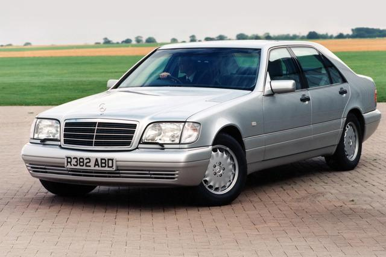
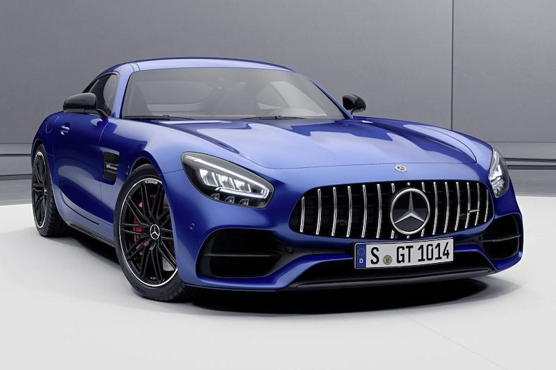
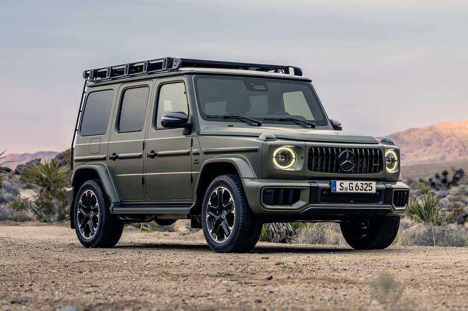
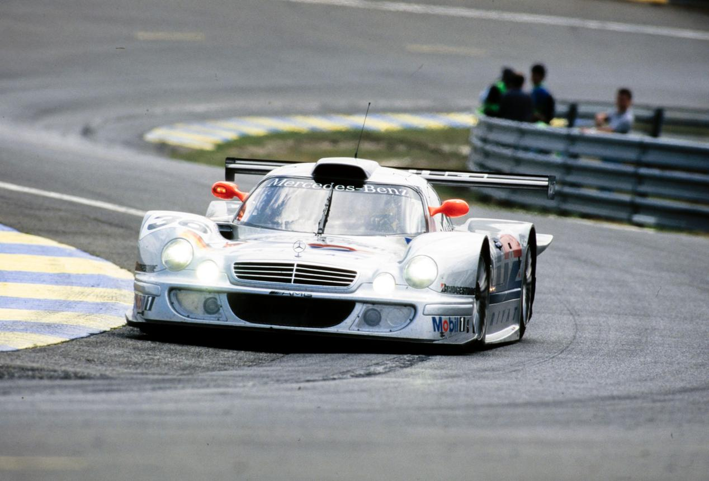
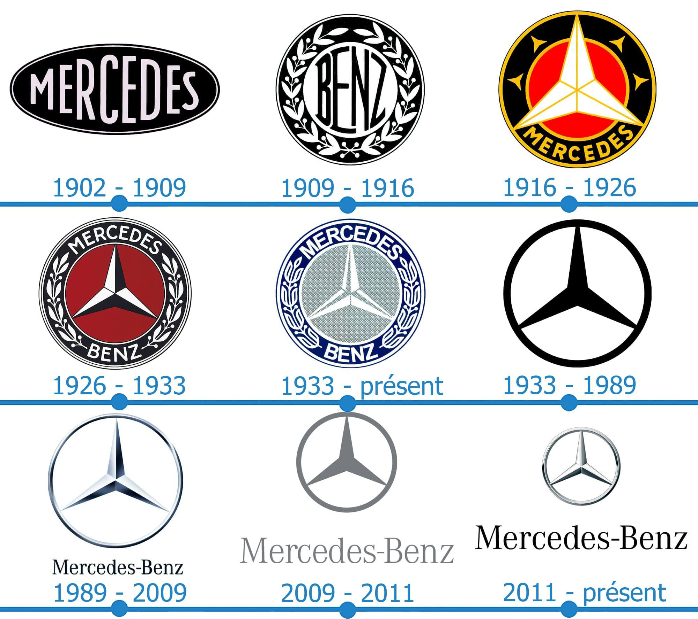

L'histoire de Mercedes-Benz commence avec deux pionniers de l'automobile : Karl Benz et Gottlieb Daimler. En 1886, Karl Benz présente la Benz Patent-Motorwagen, considérée comme la première véritable automobile de l'histoire, équipée d'un moteur à essence. La même année, Gottlieb Daimler et son collaborateur Wilhelm Maybach développent leur propre voiture à moteur. En 1888, Bertha Benz réalise le premier long voyage en automobile (plus de 100 km), prouvant que cette invention est fiable et peut être utilisée au quotidien.

Le nom Mercedes vient de Mercedes Jellinek, la fille de l'homme d'affaires Emil Jellinek. En 1901, Daimler construit la Mercedes 35 HP, une voiture révolutionnaire qui est souvent considérée comme la première automobile moderne grâce à son moteur puissant, son centre de gravité bas et sa grande stabilité. Le nom « Mercedes » devient rapidement célèbre dans toute l'Europe grâce aux nombreuses victoires en compétition.

Après la Première Guerre mondiale, les difficultés économiques poussent les entreprises Benz & Cie et Daimler-Motoren-Gesellschaft (DMG) à fusionner. En 1926, elles créent officiellement Mercedes-Benz. Le célèbre logo à l'étoile à trois branches symbolise l'ambition de Daimler de fabriquer des moteurs destinés à la terre, à la mer et aux airs.

Dans les années 1930, Mercedes-Benz devient célèbre grâce à ses luxueuses berlines et à ses voitures de course surnommées les Flèches d'Argent (Silver Arrows), qui dominent de nombreuses compétitions. Pendant la Seconde Guerre mondiale, l'entreprise fabrique principalement des camions, des moteurs d'avion et du matériel militaire pour l'Allemagne. À la fin du conflit, plusieurs usines sont détruites et Mercedes doit reconstruire son activité.

Après la guerre, Mercedes relance progressivement sa production. En 1954, la marque présente la légendaire 300 SL Gullwing, célèbre pour ses portes papillon et sa vitesse exceptionnelle. Elle est considérée comme l'une des plus belles voitures de sport jamais construites. Mercedes développe également de prestigieuses berlines comme la Mercedes 600, utilisée par de nombreux chefs d'État, célébrités et personnalités importantes.

À partir des années 1970, Mercedes devient un leader mondial en matière de sécurité automobile. La marque introduit ou perfectionne de nombreuses technologies :
Les modèles Classe C, Classe E et Classe S deviennent des références mondiales dans leurs catégories.

AMG est créée en 1967 par deux ingénieurs passionnés. En 1999, AMG devient une filiale à part entière de Mercedes-Benz. Aujourd'hui, les modèles AMG représentent les versions les plus sportives de la marque. Des voitures comme la C63 AMG, la GT ou l'exceptionnelle AMG One, équipée d'une technologie issue de la Formule 1, figurent parmi les plus performantes au monde.

Au XXIᵉ siècle, Mercedes poursuit son développement dans le luxe et l'innovation. La marque investit massivement dans :
Parmi les modèles récents :

Mercedes possède l'un des plus beaux palmarès du sport automobile. La marque domine la Formule 1 durant les années 2010 avec des pilotes comme :
Mercedes remporte également de nombreuses victoires dans les courses d'endurance et développe constamment de nouvelles technologies issues de la compétition.

